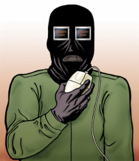

In order to explain the various aspects of security in the information age, this module first describes the growing dependence of society on information and communications technology (ICT) and the ensuing vulnerability of so-called critical information infrastructures. The module then outlines the changed nature of the information age security environment and how such change has increased the likelihood of computer-based attacks. The module also explores the various motives of attackers and discusses "cyber-terrorism". Finally, various tools and methods that are commonly used for intruding into computer systems are discussed.
The aim of the module is that students understand the relevance of computer-based attacks to the security policies of nation states. When you have completed the module, you will understand what critical information infrastructures are and how these affect the functioning of modern societies. Further, you will have gained insight into the ways in which information age risks are changing. You will also know how various types of hackers work, according to their various motives for attacking particular systems, and you will be informed about the methods they use for launching attacks on computer systems.
On 25 January 2003, global Internet traffic slowed to a crawl as a virus-like worm called Sapphire or SQL Slammer worked its way around the world. The new worm exploited a flaw in Microsoft's SQL Server 2000. The server that had been attacked randomly sought out other computers that ran a Microsoft SQL server. The infected servers then sought out more computers and infected them. The process created a considerable amount of Internet traffic and brought parts of the Internet to a standstill.
At the time, Sapphire was the fastest computer worm in history. As it began to spread throughout the Internet, the number of affected computers doubled every 8.5 seconds. It infected more than 90 per cent of its hosts within 10 minutes; 5 of the 13 domain name servers were offline as a result of the huge number of requests made by the worm.
 Follow the link to the Cooperative Association
for Internet Data Analysis (CAIDA) to watch the
astonishing spread of the Sapphire/SQL Slammer
worm over a half-hour period.
Follow the link to the Cooperative Association
for Internet Data Analysis (CAIDA) to watch the
astonishing spread of the Sapphire/SQL Slammer
worm over a half-hour period.
According to experts, the frequency of new worms and viruses is increasing and will likely continue to do so in future. The costs associated with worms and viruses are significant: A market intelligence company in London, Mi2g, has estimated that the Sapphire/SQL Slammer worm caused between $950 million and $1.2 billion worldwide in lost productivity in its first five days. That puts the worm at No. 9 on the company's list of most costly malicious code (for example, programs for worms and viruses), behind, for example, the Code Red worm, with around $2.6 billion in productivity loss; the Love Letter virus, with $8.8 billion; and the Klez virus, with $9.0 billion.
The considerable costs associated with worms and viruses and the frequency of their occurrence are the two main reasons for the public attention they get. But there are many more threats to security in the information age than just viruses or worms. In fact, a great many factors are involved in information age security, and a vast number of very different issues are discussed under the same heading. This lesson introduces the most important of these issues. However, there is one common denominator: the thorough dependence of modern societies on a wide range of information and communications technology (ICT).
- Critical Infrastructure (CI)
- The so-called critical infrastructure, which underpins many of a country's vital functions, is at most risk, due to the dependence of CI on the uninterrupted functioning of ICT.
- Change in the Risk Environment
- Changes to the international environment since the end of the Cold War have fundamentally changed the theory and practice of security. The malicious use of ICT, either as a target or as a tool used by a wide range of malevolent actors, defies traditional threat analysis. Compared to traditional security threat analysis, which discusses security in terms of actors, their intentions, and their capabilities, cyber-threats are typically seen as much more complex.
- Malicious Actors
- Hackers, script kiddies, insiders, terrorists, and state sponsored actors are examples of individuals and/or groups with destructive or harmful intent in the cyber-domain.
- Tools and Methods
- This section introduces common tools and methods used for attacks on IT, with a focus on viruses and worms.
Before continuing, please complete the exercise below.
Developed societies are becoming increasingly dependent on the various products and services that make up the so-called critical infrastructure (CI) network. Critical infrastructures are physical and IT facilities, networks, and assets whose disruption, damaging, manipulation, or destruction would have a serious impact on the health, safety, security, and/or economic well-being of a nation.
- Energy
- Communications
- Financial systems
- Transportation
- Safety
- Government services
Increasingly, everything, including for example the delivery of energy to homes and businesses and the effectiveness of health care systems, is dependent on the reliability of information systems and networks. These critical information infrastructures (CII) are regarded as the backbone of CI in many countries, given that the uninterrupted communication of data is essential to government operations, emergency services, and commerce. This dependence on information — combined with increasing vulnerabilities resulting from technical security gaps, the complexity of technology, ongoing liberalization, the growing ability and willingness of malicious actors to conduct physical and cyber-attacks — makes telecommunications and information systems highly vulnerable targets.
It is important to realize that the infrastructures as objects that need protection are not static infrastructures, as such. They are services — physical and electronic (information-) flows — with a specific role and function within society.
Consider the example of the Sapphire worm at the beginning of the lesson. The peripheral effects of Sapphire scared many government officials, as the worm's impact illustrated the potential severity of damage to ICT: Sapphire not only slowed down the Internet, but it also disrupted transportation, communications, emergency services, banking, finance, and government services. For example, the North American automated teller machine service was intermittently interrupted; several North American airport hubs were forced to postpone or cancel flights, when their online services were disrupted; and a 911 call center outside Seattle, Washington, which services 14 fire departments, two police stations, and a community of 164'000 people, was taken offline. According to an operator at the 911 dispatch center, the worm forced staff to switch to manual systems. The operator said that if a serious emergency had occurred during this period — for example, a car pileup or a major fire or explosion — there would have been a "most definite" risk to human life as a result of process delays and system unavailability.
Before continuing, please complete the exercises below.
In fact, all three answers are correct! CII is a
particularly vulnerable target for all reasons.
Having shown why the CIIs of a country are vulnerable targets, we now turn to a description of the changes to the international environment and describe the technological advances that make the exploitation of information networks possible.
The many benefits of ICT are well known. However, the consequences of society's dependence on these technologies are not yet sufficiently understood. One reason is that the new international environment since the end of the Cold War has radically changed the traditional theory and practice of security. The malicious use of ICT, either as a target or as a tool, by a wide range of malevolent actors defies traditional approaches to threat analysis. The new threats can emanate from actors whose intentions, motives, and capabilities are not known. This means that the risks are no longer calculable in the same way they were during the Cold War.
Cyber-threats are typically seen as very elusive and complex. Due to the global nature of information networks, attacks can be launched from anywhere in the world, and discovering the origin of attacks, if, indeed, they are detected at all, remains a major difficulty. Compared to traditional security threat analysis, which consists of analyses of actors, their intentions, and their capabilities, cyber-threats do not follow specific patterns and are therefore very difficult to monitor, analyze, and counteract.
- Anonymity of Actors
- The problem of identifying actors is particularly difficult in a domain where maintaining anonymity is easy and where there are time lapses between the action an intruder takes, the intrusion itself, and the effects of the intrusion. In addition, the continuing proliferation of sophisticated computer technologies among the mainstream population makes the identification of actors increasingly difficult.
- Lack of Boundaries
- Malicious computer-based attacks are not restricted by political or geographical boundaries. Attacks can originate from anywhere in the world and from multiple locations simultaneously. Investigations that mean following a string of deliberately constructed false leads can be time-consuming and resource-intensive.
- Speed of Development
- Technology develops extremely quickly. The time between the discovery of a new vulnerability and the emergence of a new tool or technique that exploits that vulnerability is getting shorter.
- Low Cost of Tools
- The technology employed in attacks is simple to use, inexpensive, and widely available. Tools and techniques for invading computers are available on computer bulletin boards and various websites, as are encryption and anonymity tools.
- Automated Methods
- Increasingly, the methods of attack have become automated and more sophisticated, resulting in greater damage from a single attack.
There is no clearly identifiable actor who could become a possible enemy — cyber-attackers can be teenagers, rogue nations, terrorists, or disgruntled insiders, even private companies or political activists.
Before continuing, please complete the exercise below.
To sum up, the information revolution has significantly changed the preconditions for attacks that use and target ICT. In the following section, we examine the individuals (or groups) who actively and maliciously exploit vulnerabilities created by the information revolution.
The ability of governments to gauge threats against critical infrastructures have traditionally been contingent upon their ability to evaluate a malicious actor's intent and that actor's ability to carry out a deliberate action. This was significantly easier during the Cold War, when they dealt purely with the security of physical factors.
After the Cold War, observers believed that there was a growing number of state and non-state actors who aimed to act against national legal frameworks and hide in the relative anonymity of cyberspace. When these actors use cyber-means of attack, they are often labeled "hackers".
The term hacker is used in two main ways, one with positive and one with negative connotations: In the computing community it refers to a member of a distinct social group. In this sense, a hacker is a particularly brilliant programmer or technical expert who knows a set of programming interfaces well enough to write novel and useful software. In popular usage and in the media, however, the term is generally used to describe computer intruders or criminals.
- Script Kiddies
- Script kiddies, typically teenage boys, are considered to be on the lowest level of the hacker hierarchy. They download prepared code from the Internet, rather than writing their own. Script kiddies can cause significant harm, often without understanding the tools and methods they are using. Frequently, their motive is curiosity or the desire for recognition from their peers.
- Hacktivists
- Hacktivism generally relates to the use of computer attacks for political, social, or religious purposes. Hacktivists are motivated by a wide range of social and political causes and use hacking techniques against a target's Internet site with the intent of disrupting normal operations but without causing serious damage. Web "sit-ins" and virtual blockades, automated email bombs, web hacks and defacements of websites, computer break-ins, and computer viruses and worms are examples of their activities.
- Crackers, or Black Hat Hackers
- A cracker is someone who (usually illegally) attempts to break into or otherwise subvert the security of a program, system, or network, often with malicious intent. Members of the hacker community themselves tend to distinguish between this type of hacker and "sneakers".
- Sneakers, or White Hat Hackers
- A sneaker is someone who attempts to break into systems or networks in order to help the owners of a system by making them aware of security flaws in it.
Before continuing, please complete the exercise below.
Hacking is considered a method used not only by technologically able individuals, but also by malicious actors with truly bad intent, such as terrorists and enemy states. Crackers and sneakers, in particular, have the knowledge, skills, and tools to attack the information infrastructure. They generally lack the motivation to act violently and to cause severe economic or social harm. However, many fear that those with the capability of causing serious damage could be persuaded into using their skills by large enough sums of money provided by "malicious" actors.
State-sponsored hacking has long been of concern to Western governments and businesses. Foreign intelligence agencies might mount cyber-attacks for a variety of reasons: to gather political or economic intelligence, to steal trade secrets, or to disrupt another country's infrastructure. Analysts note that the activities of hostile states and intelligence service would be difficult to detect. Their objective is different from that of hackers and cyber-terrorists in that they usually do not intentionally leave any evidence of the intrusion.
- are launched by terrorists,
- are aimed at parts of the information infrastructure,
- instill terror by sufficiently destructive and disruptive effects,
- and have a political, religious, or ideological motive.
"Cyber-terrorism" has also become a keyword in the cyber-threat debate. Terrorists are attracted to high-profile targets whose disruption would have symbolic, economic, financial, political, or tactical consequence. If terrorists were to employ cyber-means to achieve their ends, the most likely targets might include computer networks, routers, and servers. Experts agree that cyber-terrorism attacks are cyber-incidents launched by terrorists and aimed at parts of the information infrastructure that instill terror by effects that are sufficiently destructive or disruptive to generate fear, and that also have a political, religious, or ideological motive.
So far, however, terrorists have not used cyber-space as a weapon or target: All that is known is that they make use of computers, the Internet, and cryptography for organizational purposes. However, there is a lot of uncertainty as to the future of this threat, especially as the capabilities of possible adversaries remain unquantifiable.

Powerful images of cyber-terrorism are becoming more prevalent in many cultures. See the artist Steve Greenberg's illustration of a cyber-terrorist. (© Steve Greenberg - www.greenberg-art.com)A recent study issued by the Center for Strategic and International Studies (CSIS), Washington, DC, suggests that the threat from cyber-terrorism is generally overstated. The paper argues that few critical infrastructures are vulnerable because computer networks and critical infrastructures are distinct entities with sufficient buffers between them to counter the damaging effects of a malicious cyber-attack. The evidence suggests that hacker groups are better organized, more highly skilled, and far more active than terrorist groups in exploiting vulnerabilities within critical information infrastructures — but they do not have a reason for causing serious harm.
 The CSIS study by James A. Lewis
("Assessing the Risks of Cyber Terrorism,
Cyber War and Other Cyber Threats"),
published by the Center for Strategic and
International Studies in December 2002, is
online.
The CSIS study by James A. Lewis
("Assessing the Risks of Cyber Terrorism,
Cyber War and Other Cyber Threats"),
published by the Center for Strategic and
International Studies in December 2002, is
online.
Before continuing, please complete the exercise below.
Malicious actors have many reasons for launching
an attack. All of these possibilities are
correct!
The main goal of attacks on ICT infrastructure, and one of the prime dangers, if such an attack is successful, is system intrusion. If the intruder gains full control of a system, or "root" access, he or she has unrestricted access to the inner workings of the system and can tamper with any files; authorize new users; change the system to conceal his or her presence; install a "back door" to allow regular future access without going through log-in procedures; add a "sniffer", an application that intercepts passwords and other data in transit either within the computer or on the network (sniffer software gives the intruder access to user IDs and passwords of everyone who accesses the system). An intruder can delay, disrupt, corrupt, exploit, destroy, steal, and modify digitally stored information. Depending on the value of the information or the importance of whatever purpose the data is intended for, such actions will be less or more serious for the stakeholders.
- Trojan Horses
- A Trojan horse is a destructive program that masquerades as a benign application but sets up a back door, so that the hacker can later return and enter the system. Trojan horse programs are named after the giant wooden horse that concealed Greek soldiers during the invasion of the ancient city of Troy. Trojans are also called RATs (remote access Trojans or remote access trapdoors).
- Viruses and Worms
- Computer viruses and worms are common ways of accessing computer systems without authorization. The effects differ: Some viruses merely cause annoyance and inconvenience, some affect the functionality and stability of computing environments, while others compromise the confidentiality or integrity of information.
- Logic Bombs
- Logic bombs are programs designed to execute (or explode) under specific circumstances, to delete or corrupt data, or to have other undesirable effects.
- Buffer Overflow Attack
- Buffer overflow attacks involve sending overly long input streams to the attacked server, causing the server to flood parts of the memory and either crash the system or execute the attacker's arbitrary code as if it were part of the server's code. The result is full server compromise or denial of service (DoS). DoS attacks are explicit attempts to block access of legitimate users to a service. Examples include attempts to "flood" a network, thereby preventing legitimate network traffic; attempts to disrupt connections between two machines, thereby preventing access to a service; attempts to prevent a particular individual from accessing a service; and attempts to disrupt service to a specific system or person.
- Social Engineering
- It is important to note that one of the most promising methods to attack ICT systems is not technical at all. "Social engineering" is the common term to describe attempts to manipulate people. Gaining valuable information, like passwords, or deceiving someone into acting on behalf of an attacker are prime examples.
 This link takes you to a vast resource
("The New Hacker's Dictionary") a
comprehensive electronic compendium of hacker
slang illuminating many aspects of hackish
tradition, folklore, and humor.
This link takes you to a vast resource
("The New Hacker's Dictionary") a
comprehensive electronic compendium of hacker
slang illuminating many aspects of hackish
tradition, folklore, and humor.
 A Wired News article by Brian Krebs that
presents the history of viruses and worms dating
back to 1945.
A Wired News article by Brian Krebs that
presents the history of viruses and worms dating
back to 1945.
Before continuing, please complete the exercise below.
This lesson gives a general introduction of security issues in the information age. It explains how the transition from the Cold War era to the information age has challenged established security paradigms, as threats are no longer purely military in nature, actors are no longer contained by political or geographical boundaries, and tools and methods are more easily and cheaply available. However, not every computer worm or virus necessarily puts states at risk, even though recent developments show the rising costs associated with their propagation. The common features of security concerns in the information age are society's dependence on ICT and the vulnerability of CIIs, since the interruption of the information infrastructure that underpins states' vital functions could have potentially devastating effects.
- CII is regarded as the backbone of national critical infrastructures. The uninterrupted flow of data is essential to government operations, emergency services, and commerce, to name but a few. The increasing dependence on technology-driven products and services brings with it the increasing vulnerability of the foundations of modern societies.
- The information age grants actors anonymity and allows them to overcome political and geographical boundaries easily; the speed of development is increasing, and emerging technology for attacks is simple to use, inexpensive, increasingly automated, and widely available.
- The transition from the Cold War era to the information age has resulted in an increase of actors who might, for various reasons, intrude into computer systems. The hacker community ranges from script kiddies, who break into computer systems out of curiosity, to hacktivists, who are motivated by social, religious, and political causes, to crackers with truly malicious intents. The question remains: Are terrorists capable of mounting cyber-attacks? So far, the cyber-domain has not been used as a weapon or target by terrorists.


You have completed this learning object.
You have completed this learning object.
Please click on the button to close this window.